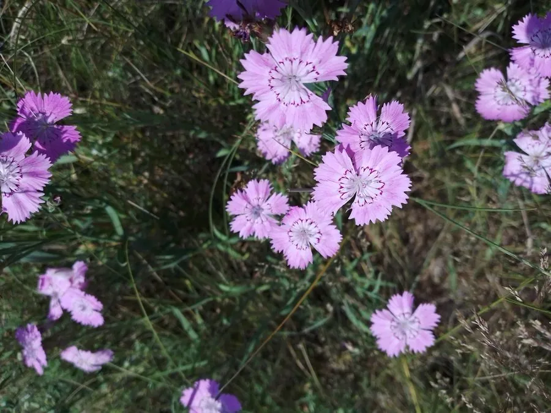

花卉与草本 · 植物界
石竹 Dianthus chinensis

石竹科多年生草本，花瓣边缘有锯齿或须状裂，色彩明快，是中国原产的传统花卉，常作二年生栽培。
- 分类
- 门被子植物门纲木兰纲目石竹目科石竹科属石竹属
- 栖息环境
- 中国北方的向阳山坡、草地与石缝，喜凉爽、阳光充足
- 地理分布
- 原产中国北方及朝鲜半岛，中国各地栽培，俄罗斯也有分布
- 保护级别
- 暂无评估
物种志
石竹为石竹科石竹属多年生草本，常作二年生栽培，株高 30–50 厘米，茎直立，节部膨大，全株带白粉。叶片线状披针形，对生，灰绿色。花单生或数朵聚生茎顶，花瓣 5 枚，边缘有锯齿或须状深裂，有红、粉、白、紫及复色，喉部常有斑纹，花期 5–9 月；果实为蒴果。
石竹原产中国北方、朝鲜半岛一带，喜凉爽、阳光充足和排水良好的环境，耐寒耐旱，怕积水和酷热，常用于花坛、花境和岩石园。它的茎节膨大、叶似竹叶，故得名“石竹”；栽培历史悠久，是传统名花之一。石竹花朵耐瓶插，可作切花；全草可入药；同属的康乃馨是它的近亲，二者花瓣边缘都有锯齿。
形态与习性
- 株高30–50 厘米，节部膨大
- 花期5–9 月，单花可开 1 周左右
- 果期7–10 月，蒴果
- 光照喜充足阳光
- 水分耐旱，忌积水
- 土壤疏松、排水良好的石灰质壤土
- 繁殖以播种为主，也可扦插
- 主要用途花坛、花境、切花，全草入药
趣味知识
- 石竹的茎节膨大、叶片似竹叶，因此得名“石竹”。
- 它的花瓣边缘有锯齿或须状深裂，与康乃馨同属，形态相似。
- 石竹原产中国，是传统名花，耐寒耐旱，适合布置岩石园。
- 石竹花剪下瓶插可保持一周左右，是常用的切花材料。